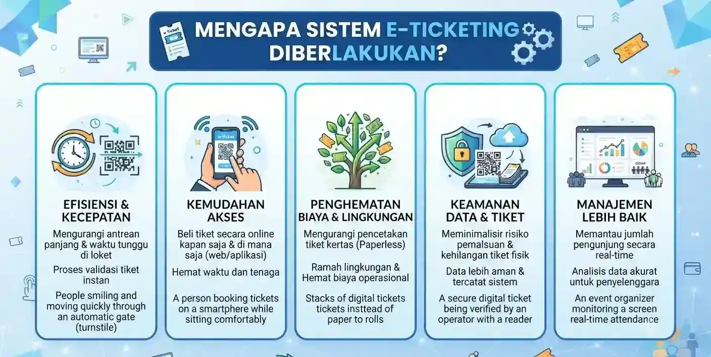

1. Pendahuluan: Wajah Baru Pengelolaan Gunung Lawu
Gunung Lawu yang berdiri megah di perbatasan Provinsi Jawa Tengah dan Jawa Timur selalu menjadi magnet utama bagi ribuan pendaki setiap tahunnya. Dengan ketinggian mencapai 3.265 meter di atas permukaan laut (mdpl), puncak Hargo Dumilah menyimpan pesona alam, sejarah, serta kekayaan flora dan fauna yang luar biasa. Namun, seiring dengan lonjakan jumlah kunjungan wisata petualangan, tantangan dalam manajemen tata kelola lingkungan, keselamatan, serta ketertiban pendaki semakin kompleks.
1.1 Mengapa Sistem E-Ticketing Diberlakukan?
Di masa lalu, antrean panjang di pos perizinan seperti Cemoro Sewu, Cemoro Kandang, maupun jalur Candi Cetho sering kali tidak terhindarkan, terutama pada musim liburan panjang atau perayaan hari kemerdekaan. Kondisi ini menyulitkan petugas dalam mencatat identitas pendaki secara akurat. Selain itu, maraknya pendaki yang mencoba melintasi jalur tikus tanpa izin resmi menimbulkan celah kerawanan yang cukup tinggi terhadap aspek keselamatan jiwa.

2. Mekanisme Pendaftaran Online dan E-Ticketing
Prosedur perizinan pendakian Gunung Lawu kini dirancang agar dapat diakses secara praktis melalui gawai (*smartphone*) masing-masing calon pendaki. Calon pengunjung tidak perlu lagi mengantre berjam-jam di loket basecamp fisik hanya untuk mendapatkan izin pendakian dasar.
2.1 Tahapan Pemesanan Tiket Elektronik Secara Mandiri
-
1
Akses Portal Reservasi Resmi Kunjungi situs web atau platform pendaftaran digital resmi Wisata Lawu, lalu pilih menu reservasi pendakian pada jalur yang diinginkan.
-
2
Pengisian Data Diri & Anggota Kelompok Masukkan nama lengkap sesuai identitas, nomor telepon darurat, tanggal rencana naik dan turun, serta data kesehatan mendasar.
-
3
Pilih Kuota Harian & Lakukan Pembayaran Sistem secara otomatis menampilkan sisa kuota pada tanggal yang dipilih. Lakukan pembayaran retribusi secara nontunai melalui QRIS.
3. Manfaat dan Dampak Positif Bagi Kelestarian Alam
Penerapan teknologi digital dalam dunia pendakian gunung membawa angin segar bagi efisiensi operasional posko sekaligus perlindungan alam. Masalah penumpukan sampah plastik dan over kapasitas di area perkemahan dapat ditekan secara signifikan karena jumlah pendaki setiap harinya dibatasi sesuai daya dukung ekologis.
“Digitalisasi tiket pendakian bukan sekadar mengikuti perkembangan teknologi modern, melainkan bentuk komitmen nyata kita bersama dalam merawat kelestarian Gunung Lawu agar tetap lestari diwariskan kepada anak cucu.”
3.1 Keamanan, Mitigasi Darurat, dan Evakuasi Cepat
Aspek keselamatan adalah prioritas mutlak dalam setiap kegiatan petualangan alam bebas. Apabila terjadi kondisi darurat di tengah pendakian, tim Search and Rescue (SAR) bersama petugas basecamp dapat langsung mengidentifikasi keberadaan kelompok korban secara akurat melalui data digital.
5. Kesimpulan
Pemberlakuan sistem e-ticketing dan pendaftaran online di Gunung Lawu merupakan langkah progresif yang membawa dampak positif jangka panjang bagi sektor pariwisata daerah maupun kelestarian alam.
6. Pertanyaan Umum (FAQ)
Apakah pendaki bisa langsung bayar di tempat (on the spot)?
Mulai saat ini, sistem pendaftaran utama dialihkan secara online. Pembelian langsung di basecamp sangat tidak disarankan karena rentan kehabisan kuota.
Bagaimana jika terjadi pembatalan jadwal pendakian setelah tiket dibeli?
Kebijakan terkait penjadwalan ulang (reschedule) atau pengembalian dana (refund) dapat dikonfirmasikan langsung melalui layanan pelanggan resmi yang tertera di portal pemesanan dengan menyertakan bukti pembayaran valid.
Apa saja berkas atau identitas yang harus dibawa saat verifikasi di pos?
Pendaki wajib menunjukkan bukti e-ticket berupa kode QR yang tersimpan di gawai beserta kartu identitas asli (KTP/Paspor/SIM/Kartu Pelajar) dari setiap anggota rombongan kepada petugas pos penjagaan.